1084B18 engine oil pump, removed - check at bench
- Path
- Procedures > 10 ENGINE UNIT > 1084 ENGINE LUBRICATION SYSTEM > 1084B engine oil lubrication circuit > 1084B18 engine oil pump, removed - check at bench
- Kind
- repair procedure (removal / refitting; the operation number is the code)
- Applies to
- all engines; all production periods
- Interactive page
- https://sloeber94.github.io/elrnDB-fPnd/en/#/2753378
Applies to: engines: 1.1; all production periods
 Dismantling
Dismantling
 Reassembling
Reassembling1. Undo the bolts (1a) and remove the intake duct (1b).
2. Remove the gasket.
3. Undo the bolts (3a) and remove the oil pump cover (3b).
4. Remove the driven gear.
5. Remove the drive gear.
6. Undo the catch (6a) and remove the oil pressure relief valve (6b).
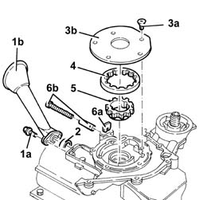
Applies to: engines: 1.2 8v; all production periods
Dismantling
Reassembling1. Undo the bolts (1a) and remove the intake duct (1b).
2. Remove the gasket.
3. Undo the bolts (3a) and remove the oil pump cover (3b).
4. Remove the driven gear.
5. Remove the drive gear.
6. Undo the catch (6a) and remove the oil pressure relief valve (6b).
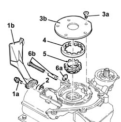
Applies to: engines: 1.3 JTD 16v; all production periods
Dismantling
Reassembling1. Undo the cap (1a) and remove the oil pressure relief valve (1b).
2. Undo the bolts (2a) and remove the engine oil inlet duct (2b) complete with gasket (2c).
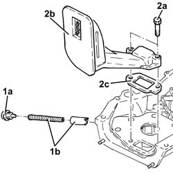
Applies to: engines: 1.1; all production periods
1. Remove crankshaft front oil seal with a suitable tool in the special groove
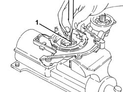
Applies to: engines: 1.2 8v; all production periods
1. Remove crankshaft front oil seal with a suitable tool in the special groove
Applies to: engines: 1.3 JTD 16v; all production periods
1. Undo the bolts (1a) and remove the oil pump cover (1b).
2. Remove the drive gear.
3. Remove the driven gear.
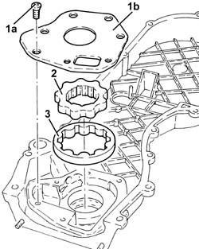
Applies to: engines: 1.1; all production periods
Reassembling
DismantlingCheck that the radial clearance between driven gear and pump casing is within the recommended limits; if this is not the case, replace the engine oil pump.
 | Measurement | Value | |
|---|---|---|---|
- | Radial clearance between pump casing and driven gear (mm) | 0.080 - 0.186 |
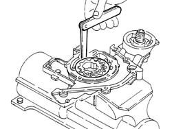
Applies to: engines: 1.2 8v; all production periods
Reassembling
Dismantling1. Check that the radial clearance between driven gear and pump casing is within the recommended limits
| Measurement | Value | |
|---|---|---|---|
1 | Radial clearance between driven gear and pump casing (mm) | 0.080 - 0.186 |
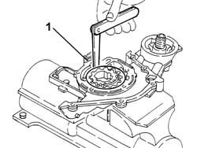
Applies to: engines: 1.3 JTD 16v; all production periods
1. Remove the crankshaft front oil seal.
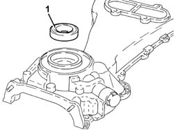
Applies to: engines: 1.1; all production periods
Check that the axial clearance between the upper side of the gears and the oil pump cover support plane is within the recommended limits; if this is not the case, replace the engine oil pump.
| Measurement | Value | |
|---|---|---|---|
- | End float between upper side of gears and cover support surface (mm) | 0.025 - 0.056 |
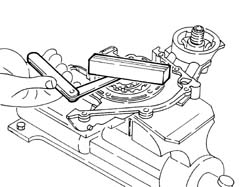
Applies to: engines: 1.2 8v; all production periods
1. Check that the axial clearance between the upper side of the gears and the oil pump cover support plane is within the recommended limits.
| Measurement | Value | |
|---|---|---|---|
1 | End float between upper side of gears and cover support surface (mm) | 0.025 - 0.056 |
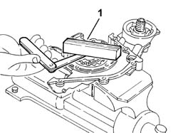
Applies to: engines: 1.3 JTD 16v; all production periods
Reassembling
DismantlingCheck that the radial clearance between pump casing and driven gear is within the recommended limits; If not, replace the oil pump assembly
| Measurement | Value | |
|---|---|---|---|
- | Radial clearance between pump casing and driven gear (mm) | 0.1 ÷ 0.23 |
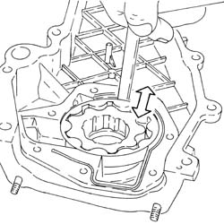
Applies to: engines: 1.1; all production periods
Check that the height of the spring for the engine oil pressure relief valve is within the recommended limits; if this is not the case, replace the spring.
| Measurement | Value | |
|---|---|---|---|
- | Length under load (mm) | 34.1 | |
Laden (daN) | 4.45 ÷ 4.94 | ||
Fit the limiting valve and fix it using the catch.
Fit the drive gear.
Fit the driven gear.
Fit the oil pump cover and tighten the bolts.
Fit the intake duct complete with gasket and fix it to the oil pump using the bolts.
Applies to: engines: 1.2 8v; all production periods
Check that the height of the spring for the engine oil pressure relief valve is within the recommended limits.
| Measurement | Value | |
|---|---|---|---|
- | Oil pressure relief valve spring height (mm) | 34.1 | |
Under test load (daN) | 4.45 - 4.94 | ||
Fit the limiting valve and fix it using the catch.
Fit the drive gear.
Fit the driven gear.
Fit the oil pump cover.
Fit the intake duct complete with gasket and fix it to the oil pump using the bolts.
Applies to: engines: 1.3 JTD 16v; all production periods
Check that the clearance between the oil pump cover support plane and the upper side of the gears is within the recommended limits; If not, replace the oil pump assembly
| Measurement | Value | |
|---|---|---|---|
- | Clearance between pump cover support surface and top of gears (mm) | 0.05 ÷ 0.075 |
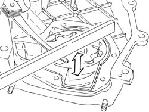
Applies to: engines: 1.3 JTD 16v; all production periods
Check that the height of the spring for the engine oil pressure relief valve is within the recommended limits; if this is not the case, replace the spring.
| Measurement | Value | |
|---|---|---|---|
- | Engine oil pressure limiting valve spring height (mm) | 36.0 | |
Check load (daN) | 5.44 ÷ 6.2 | ||
1. Refit the front crankshaft front cover oil seal (1a) using the tool (1b).
 | Name | Country |
|---|---|---|
1b | Fitting tool | 1.860.878.000 |
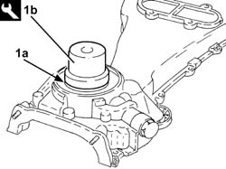
Applies to: engines: 1.3 JTD 16v; all production periods
Refit the driven gear.
Refit the drive gear.
Place the engine oil pump cover back in its housing and secure using the bolts.
Place the intake duct complete with gasket in its housing and fix it using the bolts.
Fit the oil pressure relief valve in its seat and tighten the cap.
Topics linked from this page (2)
- 1004E20 engine - dismantle and re-build following operation 1004e10 - wash and check dismantled parts - re-fit cylinder head and oil sump - does not include repairs to cylinder head and auxiliary unit
- 1084B14 engine oil pump - r+r with power unit removed